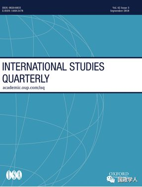

收录于合集

简 介
【作者】 Marina G. Duque：佛罗里达州立大学政治学助理教授。曾在巴西担任职业外交官和国防部助理。
【 编译】李宗芳
【校对】 彭小朵
【审核】 丁伟航
【来源】 Recognizing International Status: A Relational Approach，Sep 2018, Vol. 62 Issue 3, September 2018, Pages 577–592
【期刊】 International Studies Quarterly
国际研究季刊(ISQ)是国际研究协会的旗舰期刊。它寻求出版在国际研究中涉及重要的理论、经验和规范主题的领先学术成果。

承认国际地位：一种关系方法
Recognizing International Status: A Relational Approach
Marina G.Duque
内容提要
国家如何获得 国际 地位 ？虽然我们依靠地位来解释国际政治中的重要现象，如战争和新兴国家的外交政策，但我们仍然不明白什么是地位及地位从何而来。以往的研究将地位视为国家属性的表现，基于一国的经济和军事能力。 本文 认为 国家 地位取决于社会 承认 ，它涉及到承认的过程，在这个过程中，一个国家一旦遵守了“俱乐部”成员的规则，就会被“俱乐部”接纳。因此，是社会过程影响国家地位，而不仅局限于国家的属性。特别是， 国家地位是自我强化的 。另外， 社会封闭也会影响国家地位 ，这意味着（1）一个国家现有的关系网络影响其获得地位的能力，(2)国家承认与之相似的国家，而不是根据其他国家的属性。为了研究国际地位的决定因素，本文不再根据国家属性对其进行排名，而是通过定量方法分析国家地位如何从关系网中产生。通过推理网络（inferential network）分析，本文检验了可以用来表示承认的国家实践——大使馆网络。分析表明，自我强化的动力和社会封闭促进国家地位获得承认，而不是国家属性。
文章导读
**
**
既有定义及不足
传统的国际关系研究将国家地位定义为国家根据属性的排名，特别根据经济和军事能力 。根据这一定义，地位是一个国家属性的表现：一个国家越富有或军事越强大，它的地位就越高。 强调地位基于国家属性的方法有以下不足 ：首先，它导致了普遍的拜物主义（fetishism），即将社会关系误认为行为体物质属性的象征；其次，这种方法导致了物质还原论，因为它将物质资源视为地位的基础；最后，这种方法使社会结构具体化，因为通过国家属性来定义地位，就将地位从国家间关系中分离出来，而将它限制在国家层面。
地位的关系本体
本文借鉴了韦伯（Weber）对关系的经典定义，韦伯认为 地位是 “通过正面或负面的特权获得社会尊重的要求”。这个定义从四个方面强调了地位的社会属性。首先， 地位包括 “一个有效的主张”：行为体要想获得特定的地位，需要其他行为体的认可。由于地位取决于认可，涉及到认可的过程，一旦某一群体认为行为体遵守其“俱乐部”规则，行为体就能获准加入他们。地位的主要表现是对群体成员所期望的一种独特的生活方式——行为和实践模式的认同。其次， 地位以社会尊重为基础 ，社会尊重即社会对荣誉的评估，它可能与某种符号有关，而符号的本质和价值依赖于主体间的理解。第三， 地位秩序是一种社会等级体系 ：根据群体的社会尊重程度，其成员获得积极或消极的特权。也就是说，国际地位秩序是广义上的等级结构，或者是一种单位间不平等关系的系统。而对地位的有效要求导致社会封闭，即在群体和外界之间建立一个边界。社会封闭包括两个方面：首先，地位高的（high- status）群体成员彼此之间关系紧密，与外界的关系相对稀疏；第二，地位高的群体通过独特的价值观和消费独特的商品来区别于其他社会群体。最后， 群体成员遵守的惯例和规范调节地位秩序 。行为体的实践构成惯例，反过来又构成行为体的地位秩序。因此，地位秩序对国家来说不是外在的，而是从它们的实践中产生的。
地位的关系理论
在定义了地位之后，本文需要回答 国际地位从何而来 ？换句话说，国家是如何获得地位的？作者认为 地位取决于认可 ：一个成功的地位主张需要认可，这意味着系统的社会过程影响地位。具体地说，两个关系过程影响地位：首先， 地位源于同伴认可 。也就是说，地位高的国家是得到同类国家承认的结果，这使得地位进一步自我强化：一个国家得到的承认越多，其他国家就越认为它值得承认。获得较高地位承认的国家不仅影响社会尊重获得的条件，同时也获得享受特权的方式。这一论点可观察的条件是：获得较高地位承认的国家应该得到更多的承认，这是因为它们在社会结构中的地位，而不是因为它们拥有地位属性。
其次， 社会封闭塑造了地位关系 。如上所述，对地位的有效要求通常需要根据群体的独特性在群体和外界之间画一个界限。一方面，连通性或共享关系，尤其是与地位高的参与者共享关系会带来地位，也就是说一个国家现有的关系应该影响这个国家获得地位的能力；另一方面，基本价值观和物质资源的相似性促进了地位的认可，意味着各国会承认具有与其相似价值观和资源的国家。
关系的经验策略
如何衡量地位关系 ？ 现有最佳衡量地位关系的标准是外交代表，这是一种所有主权国家的承认做法 ，因为外交代表有明确规定，可以直接观察到。
作者的一些基本假定包括：首先，只有当派遣国认为接收国是跨多个维度的重要行为体时，才会建立大使馆；第二，大使馆具有重要的象征作用，甚至可能优先于战略利益或功能因素。因此， 作者认为向一个国家派遣大使馆的数目提供了一个衡量国家地位的标准。 故而，作者使用一个关系度量：大使馆网络。作者的基本分析单位是大使馆网络，而不是国家。这种单位的选择使作者能够从经验上研究其理论的可观察的含义，其中包括关系模式。
理论检验
首先，因为地位取决于同伴承认的结果，作者认为这是自我强化：一个国家得到的承认越多，其他国家就越认为它值得承认，因此理论验证需要观察： 一个国家现有的大使馆越多，就越可能吸引更多的大使馆 ；其次， 作者认为社会封闭影响国家地位 。社会封闭的 第一个维度是关系结构 ，一个国家既有的关系网会影响其获得认可的趋势。因此需要观察网络中另外两个内生效应，一是相互性：互相建立大使馆；二是及物性（transitivity）：各国应更有可能在其外交伙伴拥有大使馆的地方设立大使馆。 第二个维度是行为体的属性 ，国家会承认价值观和资源相似的国家，而不是像传统方法所主张的资源最多的国家，因此需要观察相似的国家更有可能相互设立大使馆。
关于国家自我强化，作者观察到：已经拥有许多大使馆的国家吸引了更多的大使馆；在社会封闭的作用方面，各国更有可能向那些建立更多大使馆的国家派遣大使馆；此外，国家之间的外交伙伴越多，它们交换建立大使馆的可能性就越大， 这些影响表明，一个国家现有的关系影响其接受承认的倾向。 另外，还观察到两个国家的大使馆越不同，交换大使馆的可能性就越小。也就是说，相似的国家更有可能相互承认。这些结果表明，地位不仅仅是富有或民主的问题，相反，地位是关系的：相似会引起认可。
结 论
这篇文章提供了 关于国际政治地位的三个新发现 。 首先，地位是由系统的社会过程产生的，这些过程不能被简化为 国家 属性 ； 其次，社会封闭塑造国际地位秩序。 也就是说，一个国家现有的关系会影响这个国家获得更高地位的可能性。此外，地位是自我加强的：一个国家得到承认越多，其他国家就越认为它值得承认； 最后，虽然传统的方法强调物质资源是地位的属性，但作者发现民主和人权等基本价值对地位同样重要，物质和观念的属性都有助于获得地位。 这表明，在国际政治中，地位的作用可能比文献中通常假设的更广泛、更复杂。
与传统方法相比， 关系方法具有一些优势 。首先，它对国际地位的基础提供了更全面的解释；其次，关系视角揭示了地位关系中的重要模式，而实体主义视角无法适应这些模式；第三，这里提出的方法始终是关系的：它使用关系经验策略来服务于关系地位理论。这里介绍的经验策略提供了一种灵活的方法，学者可以用它来研究任何历史时期的国际地位决定因素。
** 原文链接： Oxford Academic**
https://academic.oup.com/isq/article/62/3/577/4962448
_ ** _ 本文由国政学人平台独家编译首发**
更多阅读
【重磅推荐】巴里·布赞：英国学派视角下的中国崛起 | 国政学人
国政学人 （ID：guozhengxueren)
为方便学人及时阅读高质量文章
别忘把国政学人设置 星标 哦~